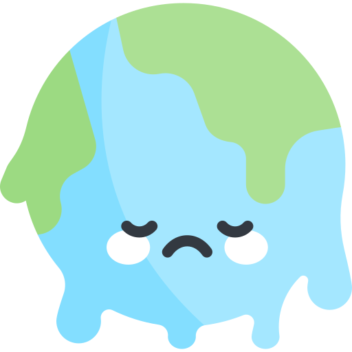
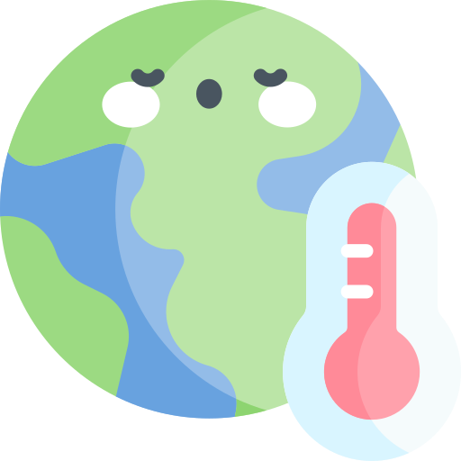
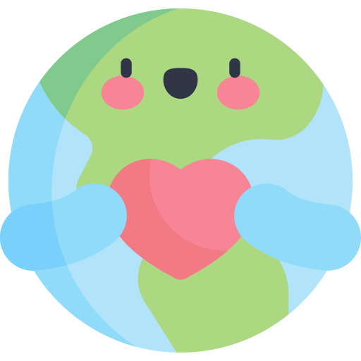

「지구ON」이란?
지구ON은 기후 변화와 위기에 대응하기 위해 모든 시민들이
기후 행동을 실천에 옮길 수 있도록 돕는 서비스입니다.
01

기후위기와 전망
▼
먼저 기후위기란 인간 활동으로 인해 온실가스의 농도가 변함으로써 상당 기간
관찰되어 온 자연적인 기후변동에 추가적으로 일어나는 기후체계의 변화로 인해
발생하는 물·식량 부족, 해양산성화, 해수면 상승, 생태계 붕괴 등 인류 문명에
회복할 수 없는 위험을 초래하여 획기적 온실가스 감축이 필요한 상태를 말합니다.
기후위기로 인해 21세기 말, 전지구적으로 1986-2005년에 비해 평균기온은 3.7℃ 상승하며 해수면은 63cm가 상승할 것으로 전망된다고 합니다. 전세계적으로 빙하 부피가 감소하여 대기 중의 CO2 농도가 증가함에 따라 해양 산성화가 진행될 것으로 보입니다.
한반도의 경우 21세기 말, 현재(1981-2010년)보다 평균기온이 5.9℃ 상승하며, 폭염 일수는 현재 전체평균 7.5일에서 31.9일로 한 달 가량 발생할 것으로 전망됩니다. 전세계가 적극적으로 온실가스 감축에 성공할 경우(538ppm) 한반도 기온상승을 3℃ 막을 수 있습니다.
출처 : 기후위기 적응 정보 포털
기후위기로 인해 21세기 말, 전지구적으로 1986-2005년에 비해 평균기온은 3.7℃ 상승하며 해수면은 63cm가 상승할 것으로 전망된다고 합니다. 전세계적으로 빙하 부피가 감소하여 대기 중의 CO2 농도가 증가함에 따라 해양 산성화가 진행될 것으로 보입니다.
한반도의 경우 21세기 말, 현재(1981-2010년)보다 평균기온이 5.9℃ 상승하며, 폭염 일수는 현재 전체평균 7.5일에서 31.9일로 한 달 가량 발생할 것으로 전망됩니다. 전세계가 적극적으로 온실가스 감축에 성공할 경우(538ppm) 한반도 기온상승을 3℃ 막을 수 있습니다.
출처 : 기후위기 적응 정보 포털
02

지구ON이 필요한 이유는?
▼
국민 91.1%가 기후위기가 심각하다는 사실을 인지하고 있으나 좀처럼 실천에 옮기지 못하고 있습니다.
지구ON은 기후위기에 대해 모르는 사람들이나 알고 있으나 어떤 기후행동을 실천해야 할지 잘 알지 못하는
사람들을 위해 기후 실천 방법과 기후 소식, 제로웨이스트 상품 정보 등을 여러분들께 제공합니다.
기후행동실천, 지구ON과 함께라면 어렵지 않아요!
03
지구ON의 설립 배경
▼
지구ON은 2022년 10월, 경기도 A시 D구의 L모 학원에서의 수강생 3명의 조별작업을 통해 탄생했습니다.
아직 미완성이기 때문에 작동하지 않는 서비스도 부분적으로 있을 수 있습니다.
04
지구ON의 메인 컬러
▼
지구ON의 메인 컬러는 #006241 입니다.
05

지구ON의 마스코트 캐릭터
▼
 지구ON의 마스코트 캐릭터 「온지구」예요!
지구ON의 마스코트 캐릭터 「온지구」예요!안드로메다 은하를 떠나 살 곳을 찾아 우주를 여행하던 도중 태양계의 아름다운 행성 지구를 발견했고 그런 아름다운 행성이 기후위기로 고통받고 있다는 사실을 알게 되고선 지구를 지키기로 다짐했어요! 비록 제가 외계인이지만 저만큼 지구를 사랑하는 지구인은 없을 거예요! 있다면 나와보시죠?😜
제 생일은 4월 22일, 지구의 날이고요, 취미는 식물 기르기예요!